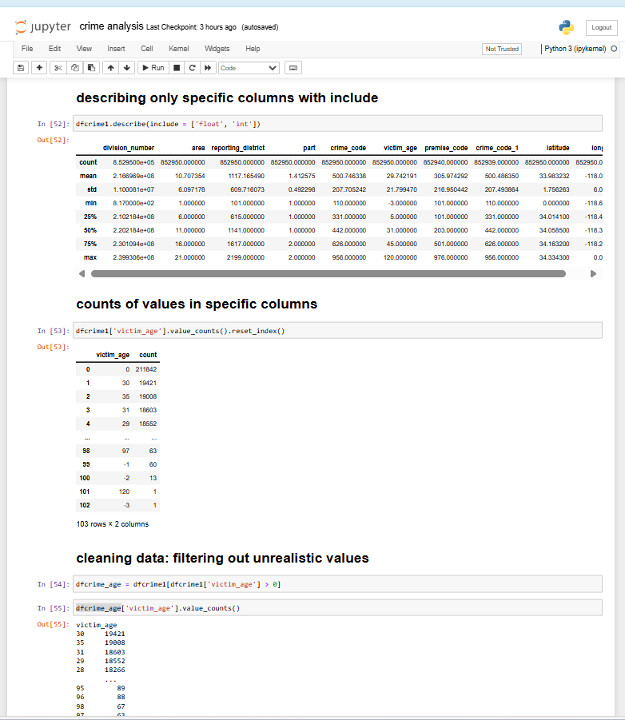
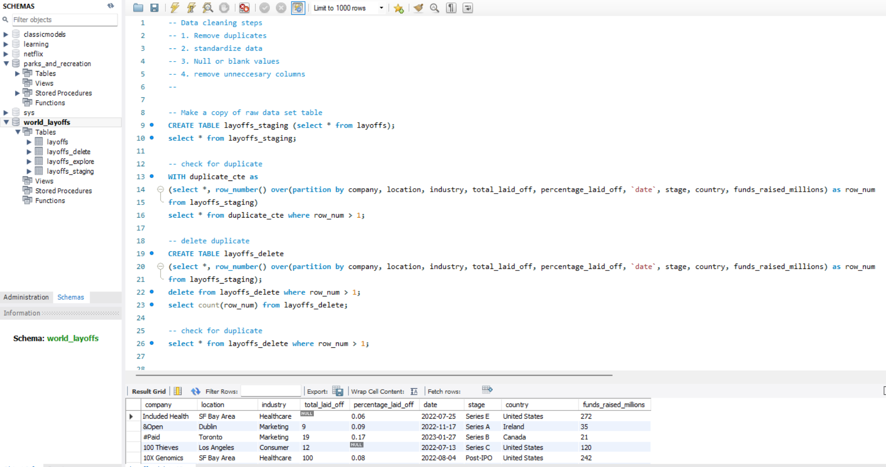

This project analyzes crime data from 2020 to the present using Python (pandas, matplotlib) to explore, clean, and visualize patterns in reported crimes.
In summary:
This project demonstrates a full data analytics pipeline using Python:
i. Data cleaning & transformation,
ii. Feature engineering (time features),
iii. Aggregations & grouping,
iv. Rich visualizations to uncover crime patterns.
v. It provides actionable insights on crime trends over time, by demographics, and by location, which can support law enforcement planning and community safety strategies.

This project focuses on analyzing a financial loan dataset to uncover insights into loan applications,
funding, repayment, customer demographics, and trends. The analysis was carried out using Python
(pandas, matplotlib, seaborn, and plotly) for data processing and visualization using donut chart, line chat, bar cahrt, area chart. tree map etc
Key findings include:
i. Total portfolio overview: Loan applications, funded amounts, received payments, and
averages of interest rate & debt-to-income ratio.
ii. Loan performance: Clear distinction between good loans (fully paid/current) and bad
loans (charged-off), with insights into recovery rates and losses.
iii. Time trends: Monthly patterns in funding, payments, and applications highlighted
seasonal variations and portfolio growth.
iv. Regional analysis: State-level comparisons revealed concentrations of loan funding and repayments.
v. Borrower segmentation: Loan amounts analyzed by term length, purpose, employment history, and
home ownership, showing factors that influence lending patterns.
Overall, the project provides a comprehensive view of loan portfolio health, repayment performance, and borrower demographics. These insights can help financial institutions with risk management, strategy planning, and lending decisions.
